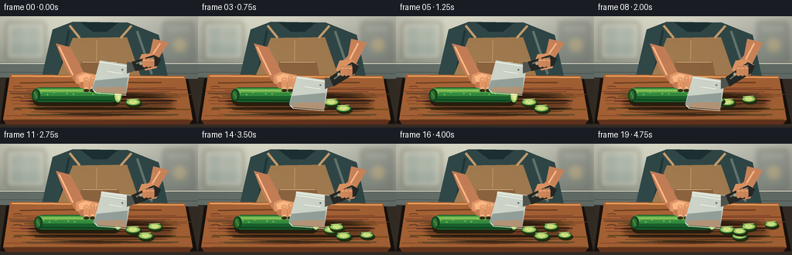
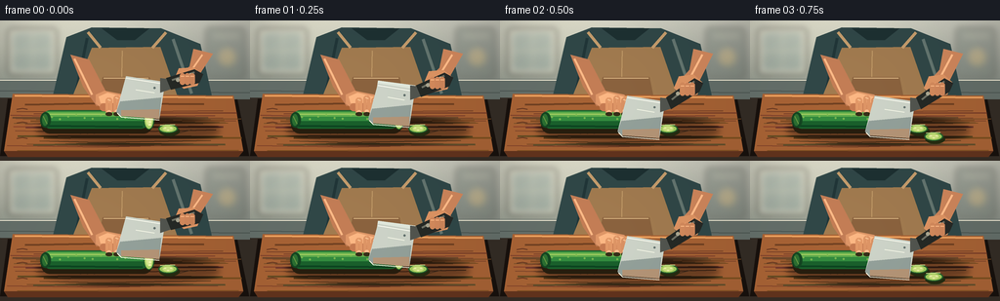
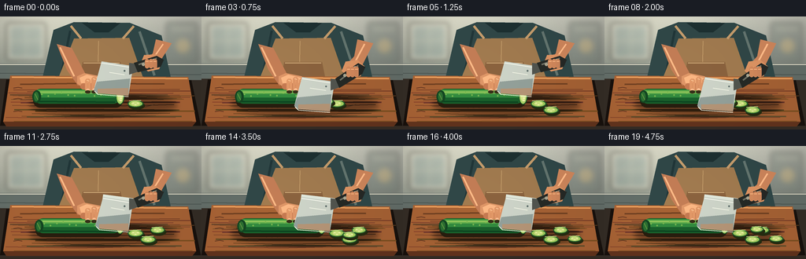
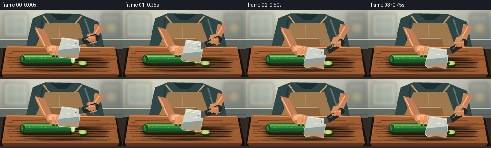

CODING AGENTS AS PIXEL WORLD MODELS
traex/GPT-5.6-Sol · motion_rationality_0012
点击播放 · 原生 RGB 像素
逐轮保存的候选
回放视频、检查图与代码变化。
每份候选均可单独播放。实际图片检查记录在下方工具轨迹中。
候选 01播放与检查图
点击播放 · 原生 RGB 像素


展开代码变化
--- 上一保存版本
+++ 本次保存版本
@@ -0,0 +1,257 @@
+from pathlib import Path
+import math
+import numpy as np
+from PIL import Image, ImageDraw, ImageFilter
+import artifact_io
+
+W, H, N = 256, 144, 20
+S = 4
+rng = np.random.default_rng(1204)
+
+def sc(v): return int(round(v*S))
+def pts(seq): return [(sc(x), sc(y)) for x,y in seq]
+
+def ellipse(d, box, fill, outline=None, width=1):
+ d.ellipse(tuple(sc(v) for v in box), fill=fill, outline=outline, width=sc(width) if outline else 1)
+def polygon(d, xy, fill, outline=None): d.polygon(pts(xy), fill=fill, outline=outline)
+def line(d, xy, fill, width=1, joint='curve'): d.line(pts(xy), fill=fill, width=sc(width), joint=joint)
+def rounded(d, box, radius, fill, outline=None, width=1):
+ d.rounded_rectangle(tuple(sc(v) for v in box), radius=sc(radius), fill=fill, outline=outline, width=sc(width))
+
+def make_background():
+ h,w=H*S,W*S
+ y=np.arange(h)[:,None]
+ x=np.arange(w)[None,:]
+ # soft warm kitchen wall
+ top=np.array([190,195,190],float); bot=np.array([135,145,141],float)
+ t=np.clip(y/(70*S),0,1)[...,None]
+ arr=np.broadcast_to(top*(1-t)+bot*t,(h,w,3)).copy()
+ # subtle window-side illumination and vignette
+ glow=np.exp(-((x-54*S)/(88*S))**2 - ((y-24*S)/(55*S))**2)[...,None]
+ arr += glow*np.array([24,23,18])
+ vign=np.clip(((x-W*S/2)/(W*S/2))**2*.11,0,.12)[...,None]
+ arr *= (1-vign)
+ noise=rng.normal(0,1.25,(h,w,1))
+ arr=np.clip(arr+noise,0,255).astype(np.uint8)
+ im=Image.fromarray(arr,'RGB')
+ # out-of-focus kitchen fixtures
+ bg=Image.new('RGBA',im.size,(0,0,0,0)); d=ImageDraw.Draw(bg)
+ rounded(d,(8,8,58,56),3,(209,211,201,105))
+ rounded(d,(14,13,52,50),2,(113,143,147,75))
+ line(d,[(33,13),(33,50)],(238,235,215,80),1)
+ line(d,[(14,31),(52,31)],(238,235,215,70),1)
+ rounded(d,(211,7,251,59),3,(88,100,97,78))
+ line(d,[(218,16),(245,16)],(208,203,184,70),2)
+ ellipse(d,(224,29,241,46),(212,168,87,65))
+ bg=bg.filter(ImageFilter.GaussianBlur(sc(3.2)))
+ im=Image.alpha_composite(im.convert('RGBA'),bg)
+ d=ImageDraw.Draw(im)
+ # backsplash and counter seam
+ polygon(d,[(0,60),(256,60),(256,83),(0,80)],(92,104,103,255))
+ line(d,[(0,61),(256,61)],(225,224,211,120),1)
+ line(d,[(0,72),(256,74)],(66,77,76,125),1)
+ # person torso: shirt then apron, kept in the middle background
+ polygon(d,[(68,17),(94,7),(165,8),(205,24),(218,83),(53,82)],(45,68,71,255))
+ # shirt folds
+ line(d,[(89,18),(78,72)],(31,52,56,110),3)
+ line(d,[(177,19),(196,75)],(93,112,111,100),3)
+ polygon(d,[(104,8),(120,20),(138,20),(153,8)],(27,46,49,210))
+ # warm canvas apron
+ polygon(d,[(94,28),(164,27),(183,82),(73,81)],(150,117,79,255))
+ line(d,[(103,28),(90,12)],(184,150,108,255),3)
+ line(d,[(156,28),(170,12)],(184,150,108,255),3)
+ line(d,[(125,31),(124,78)],(178,145,102,90),1)
+ polygon(d,[(105,58),(153,58),(157,78),(101,78)],(129,94,62,135))
+ line(d,[(106,59),(152,59)],(200,170,127,120),1)
+ return im
+
+BACKGROUND=make_background()
+
+# stable wood marks
+wood_lines=[]
+for k in range(27):
+ yy=82+rng.uniform(0,52)
+ x0=rng.uniform(7,45); x1=rng.uniform(205,248)
+ bend=rng.uniform(-2.5,2.5)
+ col=(rng.integers(91,124),rng.integers(52,76),rng.integers(30,47),rng.integers(24,55))
+ wood_lines.append(([(x0,yy),(100,yy+bend),(x1,yy+rng.uniform(-1,1))],col,rng.choice([1,1,1,2])))
+
+
+def skin_gradient_patch(box, light=(218,161,121,255), dark=(154,92,66,255), direction='y'):
+ # Reserved helper if a textured patch is desired.
+ return None
+
+def draw_board(im):
+ d=ImageDraw.Draw(im,'RGBA')
+ # dark counter under board
+ polygon(d,[(0,79),(256,81),(256,144),(0,144)],(48,42,37,255))
+ # board shadow and board
+ polygon(d,[(8,80),(243,81),(255,139),(0,139)],(22,16,13,150))
+ polygon(d,[(13,75),(239,77),(249,134),(4,134)],(154,93,52,255))
+ polygon(d,[(4,134),(249,134),(244,140),(8,140)],(91,49,29,255))
+ line(d,[(15,77),(238,79)],(220,154,94,220),2)
+ for path,col,w in wood_lines:
+ line(d,path,col,w)
+ # end-grain arcs and knife scratches
+ for yy in (91,105,121):
+ line(d,[(17,yy),(23,yy-1),(28,yy)],(83,45,29,65),1)
+ for x in (82,89,96,180):
+ line(d,[(x,116),(x+16,112)],(238,177,114,34),1)
+ # soft cast shadow under ingredients
+ sh=Image.new('RGBA',im.size,(0,0,0,0)); sd=ImageDraw.Draw(sh,'RGBA')
+ ellipse(sd,(38,101,225,125),(28,17,10,110))
+ sh=sh.filter(ImageFilter.GaussianBlur(sc(3)))
+ im.alpha_composite(sh)
+
+def draw_slice(d,cx,cy,angle=0,scale=1.0,alpha=255):
+ # horizontal cucumber coin lying on board, with crisp rind and seed star
+ rx,ry=10.0*scale,4.6*scale
+ # tiny rear shadow
+ ellipse(d,(cx-rx+1,cy-ry+2,cx+rx+2,cy+ry+3),(35,42,17,70))
+ ellipse(d,(cx-rx,cy-ry,cx+rx,cy+ry),(31,91,44,alpha))
+ ellipse(d,(cx-rx+1.4,cy-ry+1,cx+rx-1.4,cy+ry-1),(151,194,93,alpha))
+ ellipse(d,(cx-rx*.55,cy-ry*.52,cx+rx*.55,cy+ry*.52),(191,216,128,alpha))
+ # radial seeds
+ for ox,oy in [(-3,-.7),(3,-.7),(0,1.5)]:
+ ellipse(d,(cx+ox-1.2,cy+oy-.55,cx+ox+1.2,cy+oy+.55),(223,231,173,alpha))
+ line(d,[(cx-rx+2,cy-ry+1),(cx+rx-3,cy-ry+.3)],(212,229,153,130),1)
+
+def draw_cucumber_and_slices(im,i,h):
+ d=ImageDraw.Draw(im,'RGBA')
+ completed=1+(i+2)//5
+ completed=min(completed,5)
+ # collected cucumber rounds; new one nudges outward immediately after each cut
+ positions=[(172,111),(188,119),(200,107),(218,118),(229,104)]
+ for j in range(completed):
+ cx,cy=positions[j]
+ # For a just-completed cut, reveal the coin close to the heel then settle out.
+ age=i-(3+5*j)
+ if j>0 and age in (0,1,2):
+ settle=min(1,max(0,age/2))
+ cx=158+(cx-158)*settle
+ cy=108+(cy-108)*settle
+ draw_slice(d,cx,cy,scale=1-.035*j)
+ # the whole cucumber, very slightly advanced between cuts
+ left=43+1.5*(completed-1)
+ right=153
+ # body shadow
+ rounded(d,(left-1,97,right+3,116),9,(36,28,14,95))
+ # layered cylindrical body
+ rounded(d,(left,92,right,111),9,(24,91,43,255))
+ rounded(d,(left+1,93,right-2,103),7,(47,132,62,255))
+ rounded(d,(left+4,94,right-3,98.5),4,(92,166,76,180))
+ line(d,[(left+8,96),(right-7,96)],(156,198,99,115),1)
+ line(d,[(left+5,108),(right-7,109)],(12,64,32,160),2)
+ # cucumber bumps
+ for k in range(12):
+ x=left+10+k*(right-left-18)/11
+ y=99+2.2*math.sin(k*1.7)
+ ellipse(d,(x-1,y-1,x+1,y+1),(111,173,78,70))
+ # stem end on left
+ ellipse(d,(left-2,94,left+9,110),(18,66,33,255))
+ ellipse(d,(left,96,left+6,108),(40,105,48,255))
+ line(d,[(left+1,98),(left+5,106)],(97,145,67,140),1)
+ # moist cut face at right, seen almost head-on
+ ellipse(d,(right-6,92,right+5,112),(27,82,39,255))
+ ellipse(d,(right-5,93,right+3.8,111),(162,203,104,255))
+ ellipse(d,(right-3.5,96,right+2.4,108),(201,222,143,255))
+ for yy in (98.2,104,107):
+ ellipse(d,(right-.7,yy-.8,right+1.8,yy+.8),(232,236,182,220))
+ line(d,[(right-2,95),(right+1,97)],(235,241,188,150),1)
+
+def draw_left_arm_hand(im,i,h):
+ d=ImageDraw.Draw(im,'RGBA')
+ # stabilizing forearm from the left shoulder, behind the hand
+ polygon(d,[(72,35),(91,40),(111,78),(99,88),(85,68)],(181,119,85,255))
+ line(d,[(76,39),(94,76)],(234,176,133,115),2)
+ # wrist and palm above cucumber
+ polygon(d,[(98,76),(107,72),(127,76),(135,87),(128,96),(106,92),(98,85)],(206,143,102,255))
+ polygon(d,[(101,78),(110,74),(126,78),(131,84),(103,85)],(233,174,130,115))
+ # thumb behind front edge
+ rounded(d,(102,85,120,93),4,(183,116,81,255))
+ # safe curled/claw fingertips, visibly holding well left of knife
+ finger_x=[111,119,127]
+ heights=[79,77,79]
+ for k,(x,y) in enumerate(zip(finger_x,heights)):
+ rounded(d,(x-3,y,x+4,96-k*.5),3.2,(210-k*4,145-k*3,103-k*2,255))
+ # bent knuckle highlight and small nail facing viewer
+ line(d,[(x-1,y+2),(x+2,y+3)],(246,195,153,130),1)
+ ellipse(d,(x-1.6,92-k*.5,x+2.4,95-k*.5),(237,183,145,180))
+ # finger contact shadows on cucumber
+ for x in finger_x:
+ ellipse(d,(x-3,94,x+4,98),(50,45,24,80))
+
+def draw_right_arm(im,h):
+ d=ImageDraw.Draw(im,'RGBA')
+ # forearm follows the raised/lowered handle, anchored near shoulder
+ hy=53+10*h
+ polygon(d,[(198,29),(218,34),(205,54+7*h),(191,66+9*h),(181,58+8*h),(194,47+4*h)],(192,128,91,255))
+ line(d,[(207,35),(191,58+8*h)],(241,181,137,115),2)
+ # gripping hand wrapped around handle
+ polygon(d,[(183,49+9*h),(198,48+8*h),(207,55+9*h),(202,67+10*h),(188,70+10*h),(178,61+9*h)],(207,142,99,255))
+ # fingers across dark handle later; base shapes here
+ for k in range(3):
+ rounded(d,(188+k*3,55+9*h,195+k*3,67+9*h),3,(219-k*5,151-k*3,106-k*2,255))
+ line(d,[(190+k*3,58+9*h),(194+k*3,59+9*h)],(246,190,147,110),1)
+
+def draw_knife(im,i,h):
+ d=ImageDraw.Draw(im,'RGBA')
+ dy=22*h
+ rock=2.0*math.sin(2*math.pi*(i%5)/5)
+ # optional very restrained motion glint on fast parts
+ speed=abs(math.sin(2*math.pi*(i%5)/5))
+ if speed>.75:
+ polygon(d,[(129+rock,57+dy-3),(169,62+dy-3),(161,100+dy-3),(123+rock,98+dy-3)],(210,222,219,24))
+ # blade face: broad chef's knife, tip at left and heel beneath bolster
+ blade=[(129+rock,57+dy),(169,63+dy),(163,101+dy),(124+rock,98+dy),(119+rock,94+dy)]
+ polygon(d,blade,(191,202,199,255))
+ # steel shaded lower half
+ polygon(d,[(123+rock,83+dy),(165,79+dy),(163,101+dy),(124+rock,98+dy),(119+rock,94+dy)],(137,153,153,245))
+ # reflected board warmth
+ polygon(d,[(124+rock,92+dy),(163,91+dy),(163,101+dy),(124+rock,98+dy)],(168,142,118,95))
+ line(d,[(129+rock,59+dy),(168,65+dy)],(245,250,244,235),1)
+ line(d,[(120+rock,95+dy),(124+rock,99+dy),(163,102+dy)],(237,242,232,235),1)
+ # blade logo/rivet detail
+ ellipse(d,(157,68+dy,159.2,70.2+dy),(92,108,109,175))
+ line(d,[(139+rock,71+dy),(158,74+dy)],(231,238,232,80),1)
+ # bolster and ergonomic black handle, pointing to upper right
+ polygon(d,[(164,59+dy),(172,60+dy),(176,70+dy),(164,74+dy)],(76,81,78,255))
+ polygon(d,[(170,59+dy),(199,50+dy*.46),(208,55+dy*.46),(204,64+dy*.47),(175,71+dy)],(35,39,37,255))
+ line(d,[(176,61+dy),(199,53+dy*.46)],(104,109,101,180),2)
+ ellipse(d,(193,54+dy*.46,197,58+dy*.46),(173,172,151,220))
+ ellipse(d,(180,59+dy*.7,184,63+dy*.7),(159,159,144,210))
+ # fingers over handle improve grip/readability
+ for k in range(3):
+ x=184+k*5
+ rounded(d,(x,54+dy*.48,x+5.5,66+dy*.57),2.7,(198-k*3,132-k*2,92-k,255))
+ line(d,[(x+1,57+dy*.5),(x+4.5,57+dy*.5)],(238,177,132,120),1)
+
+def add_finish(im):
+ # gentle highlights and cinematic color / grain; no temporal random flicker
+ arr=np.asarray(im.convert('RGB')).astype(np.float32)
+ yy,xx=np.mgrid[0:H*S,0:W*S]
+ light=1+0.055*np.exp(-((xx-78*S)/(120*S))**2-((yy-79*S)/(85*S))**2)
+ arr*=light[...,None]
+ # warm grade
+ arr[...,0]*=1.025; arr[...,2]*=.96
+ arr=np.clip(arr,0,255).astype(np.uint8)
+ out=Image.fromarray(arr).resize((W,H),Image.Resampling.LANCZOS)
+ return np.asarray(out,dtype=np.uint8)
+
+def render(i):
+ im=BACKGROUND.copy()
+ draw_board(im)
+ phase=(i%5)/5.0
+ h=(1-math.cos(phase*2*math.pi))/2
+ draw_cucumber_and_slices(im,i,h)
+ draw_left_arm_hand(im,i,h)
+ draw_right_arm(im,h)
+ draw_knife(im,i,h)
+ return add_finish(im)
+
+def main():
+ frames=np.stack([render(i) for i in range(N)],axis=0)
+ artifact_io.save(frames,Path(__file__).resolve().parent)
+ print(f"saved {frames.shape} {frames.dtype}")
+
+if __name__=='__main__': main()
候选 02播放与检查图
点击播放 · 原生 RGB 像素


展开代码变化
--- 上一保存版本
+++ 本次保存版本
@@ -125,7 +125,9 @@
for j in range(completed):
cx,cy=positions[j]
# For a just-completed cut, reveal the coin close to the heel then settle out.
- age=i-(3+5*j)
+ # Cuts finish at frames 3, 8, 13 and 18. A new round starts at
+ # the blade heel and slides only a short, plausible distance away.
+ age=i-(3+5*(j-1))
if j>0 and age in (0,1,2):
settle=min(1,max(0,age/2))
cx=158+(cx-158)*settle
可观测工具轨迹
实际执行的命令与返回图片。
命令 1exit 0
/bin/bash -lc "cat prompt.txt && printf '\\n---RULES---\\n' && cat GENERATION_RULES.md && printf '\\n---SPEC---\\n' && cat task_spec.json"
命令 2exit 0
/bin/bash -lc "find . -maxdepth 2 -type f -printf '%p\\n' | sort && printf '\\n---TOOLS---\\n' && command -v ffmpeg || true && command -v python3 || true"
命令 3exit 0
/bin/bash -lc 'cat artifact_io.py'
命令 4exit 0
/bin/bash -lc "cat > generate.py <<'PY'
from pathlib import Path
import math
import numpy as np
from PIL import Image, ImageDraw, ImageFilter
import artifact_io
W, H, N = 256, 144, 20
S = 4
rng = np.random.default_rng(1204)
def sc(v): return int(round(v*S))
def pts(seq): return [(sc(x), sc(y)) for x,y in seq]
def ellipse(d, box, fill, outline=None, width=1):
d.ellipse(tuple(sc(v) for v in box), fill=fill, outline=outline, width=sc(width) if outline else 1)
def polygon(d, xy, fill, outline=None): d.polygon(pts(xy), fill=fill, outline=outline)
def line(d, xy, fill, width=1, joint='curve'): d.line(pts(xy), fill=fill, width=sc(width), joint=joint)
def rounded(d, box, radius, fill, outline=None, width=1):
d.rounded_rectangle(tuple(sc(v) for v in box), radius=sc(radius), fill=fill, outline=outline, width=sc(width))
def make_background():
h,w=H*S,W*S
y=np.arange(h)[:,None]
x=np.arange(w)[None,:]
# soft warm kitchen wall
top=np.array([190,195,190],float); bot=np.array([135,145,141],float)
t=np.clip(y/(70*S),0,1)[...,None]
arr=np.broadcast_to(top*(1-t)+bot*t,(h,w,3)).copy()
# subtle window-side illumination and vignette
glow=np.exp(-((x-54*S)/(88*S))**2 - ((y-24*S)/(55*S))**2)[...,None]
arr += glow*np.array([24,23,18])
vign=np.clip(((x-W*S/2)/(W*S/2))**2*.11,0,.12)[...,None]
arr *= (1-vign)
noise=rng.normal(0,1.25,(h,w,1))
arr=np.clip(arr+noise,0,255).astype(np.uint8)
im=Image.fromarray(arr,'RGB')
# out-of-focus kitchen fixtures
bg=Image.new('RGBA',im.size,(0,0,0,0)); d=ImageDraw.Draw(bg)
rounded(d,(8,8,58,56),3,(209,211,201,105))
rounded(d,(14,13,52,50),2,(113,143,147,75))
line(d,[(33,13),(33,50)],(238,235,215,80),1)
line(d,[(14,31),(52,31)],(238,235,215,70),1)
rounded(d,(211,7,251,59),3,(88,100,97,78))
line(d,[(218,16),(245,16)],(208,203,184,70),2)
ellipse(d,(224,29,241,46),(212,168,87,65))
bg=bg.filter(ImageFilter.GaussianBlur(sc(3.2)))
im=Image.alpha_composite(im.convert('RGBA'),bg)
d=ImageDraw.Draw(im)
# backsplash and counter seam
polygon(d,[(0,60),(256,60),(256,83),(0,80)],(92,104,103,255))
line(d,[(0,61),(256,61)],(225,224,211,120),1)
line(d,[(0,72),(256,74)],(66,77,76,125),1)
# person torso: shirt then apron, kept in the middle background
polygon(d,[(68,17),(94,7),(165,8),(205,24),(218,83),(53,82)],(45,68,71,255))
# shirt folds
line(d,[(89,18),(78,72)],(31,52,56,110),3)
line(d,[(177,19),(196,75)],(93,112,111,100),3)
polygon(d,[(104,8),(120,20),(138,20),(153,8)],(27,46,49,210))
# warm canvas apron
polygon(d,[(94,28),(164,27),(183,82),(73,81)],(150,117,79,255))
line(d,[(103,28),(90,12)],(184,150,108,255),3)
line(d,[(156,28),(170,12)],(184,150,108,255),3)
line(d,[(125,31),(124,78)],(178,145,102,90),1)
polygon(d,[(105,58),(153,58),(157,78),(101,78)],(129,94,62,135))
line(d,[(106,59),(152,59)],(200,170,127,120),1)
return im
BACKGROUND=make_background()
# stable wood marks
wood_lines=[]
for k in range(27):
yy=82+rng.uniform(0,52)
x0=rng.uniform(7,45); x1=rng.uniform(205,248)
bend=rng.uniform(-2.5,2.5)
col=(rng.integers(91,124),rng.integers(52,76),rng.integers(30,47),rng.integers(24,55))
wood_lines.append(([(x0,yy),(100,yy+bend),(x1,yy+rng.uniform(-1,1))],col,rng.choice([1,1,1,2])))
def skin_gradient_patch(box, light=(218,161,121,255), dark=(154,92,66,255), direction='y'):
# Reserved helper if a textured patch is desired.
return None
def draw_board(im):
d=ImageDraw.Draw(im,'RGBA')
# dark counter under board
polygon(d,[(0,79),(256,81),(256,144),(0,144)],(48,42,37,255))
# board shadow and board
polygon(d,[(8,80),(243,81),(255,139),(0,139)],(22,16,13,150))
polygon(d,[(13,75),(239,77),(249,134),(4,134)],(154,93,52,255))
polygon(d,[(4,134),(249,134),(244,140),(8,140)],(91,49,29,255))
line(d,[(15,77),(238,79)],(220,154,94,220),2)
for path,col,w in wood_lines:
line(d,path,col,w)
# end-grain arcs and knife scratches
for yy in (91,105,121):
line(d,[(17,yy),(23,yy-1),(28,yy)],(83,45,29,65),1)
for x in (82,89,96,180):
line(d,[(x,116),(x+16,112)],(238,177,114,34),1)
# soft cast shadow under ingredients
sh=Image.new('RGBA',im.size,(0,0,0,0)); sd=ImageDraw.Draw(sh,'RGBA')
ellipse(sd,(38,101,225,125),(28,17,10,110))
sh=sh.filter(ImageFilter.GaussianBlur(sc(3)))
im.alpha_composite(sh)
def draw_slice(d,cx,cy,angle=0,scale=1.0,alpha=255):
# horizontal cucumber coin lying on board, with crisp rind and seed star
rx,ry=10.0*scale,4.6*scale
# tiny rear shadow
ellipse(d,(cx-rx+1,cy-ry+2,cx+rx+2,cy+ry+3),(35,42,17,70))
ellipse(d,(cx-rx,cy-ry,cx+rx,cy+ry),(31,91,44,alpha))
ellipse(d,(cx-rx+1.4,cy-ry+1,cx+rx-1.4,cy+ry-1),(151,194,93,alpha))
ellipse(d,(cx-rx*.55,cy-ry*.52,cx+rx*.55,cy+ry*.52),(191,216,128,alpha))
# radial seeds
for ox,oy in [(-3,-.7),(3,-.7),(0,1.5)]:
ellipse(d,(cx+ox-1.2,cy+oy-.55,cx+ox+1.2,cy+oy+.55),(223,231,173,alpha))
line(d,[(cx-rx+2,cy-ry+1),(cx+rx-3,cy-ry+.3)],(212,229,153,130),1)
def draw_cucumber_and_slices(im,i,h):
d=ImageDraw.Draw(im,'RGBA')
completed=1+(i+2)//5
completed=min(completed,5)
# collected cucumber rounds; new one nudges outward immediately after each cut
positions=[(172,111),(188,119),(200,107),(218,118),(229,104)]
for j in range(completed):
cx,cy=positions[j]
# For a just-completed cut, reveal the coin close to the heel then settle out.
age=i-(3+5*j)
if j>0 and age in (0,1,2):
settle=min(1,max(0,age/2))
cx=158+(cx-158)*settle
cy=108+(cy-108)*settle
draw_slice(d,cx,cy,scale=1-.035*j)
# the whole cucumber, very slightly advanced between cuts
left=43+1.5*(completed-1)
right=153
# body shadow
rounded(d,(left-1,97,right+3,116),9,(36,28,14,95))
# layered cylindrical body
rounded(d,(left,92,right,111),9,(24,91,43,255))
rounded(d,(left+1,93,right-2,103),7,(47,132,62,255))
rounded(d,(left+4,94,right-3,98.5),4,(92,166,76,180))
line(d,[(left+8,96),(right-7,96)],(156,198,99,115),1)
line(d,[(left+5,108),(right-7,109)],(12,64,32,160),2)
# cucumber bumps
for k in range(12):
x=left+10+k*(right-left-18)/11
y=99+2.2*math.sin(k*1.7)
ellipse(d,(x-1,y-1,x+1,y+1),(111,173,78,70))
# stem end on left
ellipse(d,(left-2,94,left+9,110),(18,66,33,255))
ellipse(d,(left,96,left+6,108),(40,105,48,255))
line(d,[(left+1,98),(left+5,106)],(97,145,67,140),1)
# moist cut face at right, seen almost head-on
ellipse(d,(right-6,92,right+5,112),(27,82,39,255))
ellipse(d,(right-5,93,right+3.8,111),(162,203,104,255))
ellipse(d,(right-3.5,96,right+2.4,108),(201,222,143,255))
for yy in (98.2,104,107):
ellipse(d,(right-.7,yy-.8,right+1.8,yy+.8),(232,236,182,220))
line(d,[(right-2,95),(right+1,97)],(235,241,188,150),1)
def draw_left_arm_hand(im,i,h):
d=ImageDraw.Draw(im,'RGBA')
# stabilizing forearm from the left shoulder, behind the hand
polygon(d,[(72,35),(91,40),(111,78),(99,88),(85,68)],(181,119,85,255))
line(d,[(76,39),(94,76)],(234,176,133,115),2)
# wrist and palm above cucumber
polygon(d,[(98,76),(107,72),(127,76),(135,87),(128,96),(106,92),(98,85)],(206,143,102,255))
polygon(d,[(101,78),(110,74),(126,78),(131,84),(103,85)],(233,174,130,115))
# thumb behind front edge
rounded(d,(102,85,120,93),4,(183,116,81,255))
# safe curled/claw fingertips, visibly holding well left of knife
finger_x=[111,119,127]
heights=[79,77,79]
for k,(x,y) in enumerate(zip(finger_x,heights)):
rounded(d,(x-3,y,x+4,96-k*.5),3.2,(210-k*4,145-k*3,103-k*2,255))
# bent knuckle highlight and small nail facing viewer
line(d,[(x-1,y+2),(x+2,y+3)],(246,195,153,130),1)
ellipse(d,(x-1.6,92-k*.5,x+2.4,95-k*.5),(237,183,145,180))
# finger contact shadows on cucumber
for x in finger_x:
ellipse(d,(x-3,94,x+4,98),(50,45,24,80))
def draw_right_arm(im,h):
d=ImageDraw.Draw(im,'RGBA')
# forearm follows the raised/lowered handle, anchored near shoulder
hy=53+10*h
polygon(d,[(198,29),(218,34),(205,54+7*h),(191,66+9*h),(181,58+8*h),(194,47+4*h)],(192,128,91,255))
line(d,[(207,35),(191,58+8*h)],(241,181,137,115),2)
# gripping hand wrapped around handle
polygon(d,[(183,49+9*h),(198,48+8*h),(207,55+9*h),(202,67+10*h),(188,70+10*h),(178,61+9*h)],(207,142,99,255))
# fingers across dark handle later; base shapes here
for k in range(3):
rounded(d,(188+k*3,55+9*h,195+k*3,67+9*h),3,(219-k*5,151-k*3,106-k*2,255))
line(d,[(190+k*3,58+9*h),(194+k*3,59+9*h)],(246,190,147,110),1)
def draw_knife(im,i,h):
d=ImageDraw.Draw(im,'RGBA')
dy=22*h
rock=2.0*math.sin(2*math.pi*(i%5)/5)
# optional very restrained motion glint on fast parts
speed=abs(math.sin(2*math.pi*(i%5)/5))
if speed>.75:
polygon(d,[(129+rock,57+dy-3),(169,62+dy-3),(161,100+dy-3),(123+rock,98+dy-3)],(210,222,219,24))
# blade face: broad chef's knife, tip at left and heel beneath bolster
blade=[(129+rock,57+dy),(169,63+dy),(163,101+dy),(124+rock,98+dy),(119+rock,94+dy)]
polygon(d,blade,(191,202,199,255))
# steel shaded lower half
polygon(d,[(123+rock,83+dy),(165,79+dy),(163,101+dy),(124+rock,98+dy),(119+rock,94+dy)],(137,153,153,245))
# reflected board warmth
polygon(d,[(124+rock,92+dy),(163,91+dy),(163,101+dy),(124+rock,98+dy)],(168,142,118,95))
line(d,[(129+rock,59+dy),(168,65+dy)],(245,250,244,235),1)
line(d,[(120+rock,95+dy),(124+rock,99+dy),(163,102+dy)],(237,242,232,235),1)
# blade logo/rivet detail
ellipse(d,(157,68+dy,159.2,70.2+dy),(92,108,109,175))
line(d,[(139+rock,71+dy),(158,74+dy)],(231,238,232,80),1)
# bolster and ergonomic black handle, pointing to upper right
polygon(d,[(164,59+dy),(172,60+dy),(176,70+dy),(164,74+dy)],(76,81,78,255))
polygon(d,[(170,59+dy),(199,50+dy*.46),(208,55+dy*.46),(204,64+dy*.47),(175,71+dy)],(35,39,37,255))
line(d,[(176,61+dy),(199,53+dy*.46)],(104,109,101,180),2)
ellipse(d,(193,54+dy*.46,197,58+dy*.46),(173,172,151,220))
ellipse(d,(180,59+dy*.7,184,63+dy*.7),(159,159,144,210))
# fingers over handle improve grip/readability
for k in range(3):
x=184+k*5
rounded(d,(x,54+dy*.48,x+5.5,66+dy*.57),2.7,(198-k*3,132-k*2,92-k,255))
line(d,[(x+1,57+dy*.5),(x+4.5,57+dy*.5)],(238,177,132,120),1)
def add_finish(im):
# gentle highlights and cinematic color / grain; no temporal random flicker
arr=np.asarray(im.convert('RGB')).astype(np.float32)
yy,xx=np.mgrid[0:H*S,0:W*S]
light=1+0.055*np.exp(-((xx-78*S)/(120*S))**2-((yy-79*S)/(85*S))**2)
arr*=light[...,None]
# warm grade
arr[...,0]*=1.025; arr[...,2]*=.96
arr=np.clip(arr,0,255).astype(np.uint8)
out=Image.fromarray(arr).resize((W,H),Image.Resampling.LANCZOS)
return np.asarray(out,dtype=np.uint8)
def render(i):
im=BACKGROUND.copy()
draw_board(im)
phase=(i%5)/5.0
h=(1-math.cos(phase*2*math.pi))/2
draw_cucumber_and_slices(im,i,h)
draw_left_arm_hand(im,i,h)
draw_right_arm(im,h)
draw_knife(im,i,h)
return add_finish(im)
def main():
frames=np.stack([render(i) for i in range(N)],axis=0)
artifact_io.save(frames,Path(__file__).resolve().parent)
print(f\"saved {frames.shape} {frames.dtype}\")
if __name__=='__main__': main()
PY
python3 generate.py
ls -lh pixels.npz index.html inspection.png frames/00.png frames/19.png"命令 5exit 0
/bin/bash -lc "command -v chafa || command -v viu || command -v jp2 || true
python3 - <<'PY'
from PIL import Image
im=Image.open('inspection.png')
print(im.size, im.getbbox())
PY"命令 6exit 0
/bin/bash -lc "python3 generate.py && python3 - <<'PY'
from pathlib import Path
import json, numpy as np
from PIL import Image
spec=json.loads(Path('task_spec.json').read_text())
z=np.load('pixels.npz')['pixels']
files=sorted(Path('frames').glob('*.png'))
assert z.shape==(spec['height'],spec['width'],spec['frames'])
assert len(files)==spec['frames']
for f in files:
im=Image.open(f); assert im.mode=='RGB' and im.size==(spec['width'],spec['height'])
print('validated:', len(files), 'RGB frames;', z.shape, 'packed tensor')
PY"保存候选 2 份；完成命令 6 次；可验证图片返回 0 张。原始 API 响应与完整日志保留在本地。